Module 5 Project
Introduction
Sharks are an ancient group of cartilaginous fishes in the class Chondrichthyes, subclass Elasmobranchii, and subdivision Selachimorpha. The selachians include over 500 species that are further placed in in two superorders: Squalomorphii and Galeomorphii. Modern sharks originated nearly 200 million years ago (Grogan, Lund, and Greenfest-Allen (2012)) and, since then, have diversified into nearly every major marine ecosystem. This evolutionary success has been attributed to the diversity of their locomotor modes and associated body shape (Lauder and Di Santo (2015),Thomson and Simanek (1977)). A modest body of work devoted to the ecomorphology of sharks has focused largely on caudal find shape as it relates to ecology and locomotor modes Wilga and Lauder (2004). Sharks have a heterocercal tails in which the caudal part of notochord flexes dorsally and supports a large dorsal lobe of the fin, while, with more than a few exceptions, the ventral lobe is small.

In there seminal work on shark ecomorphology, Thomson and Simanek (1977) put forth that there were four shark morphotypes:
- A group characterized by having a deep body, large pectoral fins, a symmetrical caudal fin with a narrow peduncle (ie., base to the fin) and high-aspect ratio. A white shark represents this group.
- A group characterized by a body less deep then Group 1 and a cadual fin that is swept (ie., large heterocercal angle–the angle between the upper and lower lobes of the fin). This group includes most carcharhinid sharks such as the bull shark.
- A group with a large head, blunt snout, a body that has anteriorly placed pectoral fins and posteriorly placed dorsal and pelvic, and a caudal fin with a low heterocercal angle and small ventral lobe. Catsharks (family Scyliorhinidae) and dogfish (order Squaliformes) represent this group.
- A group characterized by a caudal fin with a higher aspect angle similar to that of Group 2 but lacking an anal fin, e.g. the dalatiids.
 A white shark, Carcharias carchardon, typical of Group 1. |
|
 A bull shark, Carcharhinus leucas, typical of Group 2. |
 A dogfish of the genus Squalus typical of Group 3. |
|
 A kitefin shark, Dalatias licha, typical of Group 4. |
Sternes and Shimada (2020) used geometric morphometrics and a multivariate analysis to evaluate the groups proposed by Thomson and Simanek (1977) and found that sharks fell into one of two morphotypes (A and B). Their Group A was characterized by an elongate body, posteriorly placed dorsal fin, and a swept caudal while Group B was characterized by a deeper body, anteriorly place dorsal fins, and a less swept caudal fin. Thomson and Simanek (1977) suggested that the shape of species in these two broad ecomorphs evolved due to differences in ecological niche and locomotor behavior. Specifically, they posited that the species of elongate Group A are typically benthic and swim like eels whereas the deeper bodied species of Group B are often pelagic and swim like salmon or tunas.

Although the work of Thomson and Simanek (1977) and later Sternes and Shimada (2020) points to interesting patterns in shark body-shape, neither study explicitly studied the role habitat—that is, pelagic or benthic—had in influencing the evolution body-shape evolution. In particular, Sternes and Shimada (2020) merely observed that their two groups with different body shapes often varied in their habitat preference. In addition, Sternes and Shimada (2020) made no explicit, quantitative phylogenetic test of their patterns. This leaves open an important question: Do pelagic and benthic sharks have significantly different body shape? Subsequently, we might also ask, Has the morphology of pelagic and benthic sharks evolved at the same rate? These are the questions we will take on in this project.
These questions represent two an important thrust of evolutionary research: what macroevolutionary events have contributed to diversity, whether in species or phenotype. To answer questions like these requires that we essentially recapitulate the Sternes and Shimada (2020) body-shape data set using landmark-based geometric morphometrics. This is a relatively straightforward, if tedious, method of capturing shape variation in a group of interest. For this, you’ll digitize 14 homologous landmarks on images of some 265 species of sharks. Using the best practices in the field of geometric morphometrics to align our landlandmarks and extract shape information, we’ll assess morphological disparity in a phylogenetic framework and assess the difference in rates of morphological evolution between the groups between pelagic and benthic sharks.
Methods
Image acquisition
A few decades ago, a morphometric project like this would require visiting museums collections from around the world to take images of the specimens and species of interest. In fact, this was a major part of Prof. Kenaley’s PhD thesis, which included trips to natural history collections in France, Denmark, Great Britain, Taiwan, Japan, Monaco, New Zealand, and Australia. Ahhhhhh, the good ol’ days. Fortunately (or unfortunately), travel to such wonderful places may be avoided several resources exist that contain a trove of images of fish-like vertebrates.
We’ll make use of shark images in Prof. Kenaley and his students have collected in the course of a nearly identical research project. Real quickly, this how we did it.
We first began with images of drawings from Compagno (1984), Compagno
(2001), and Ebert, Dando, and Fowler
(2021), all authoritative texts on the identification, ecology,
and evolution of sharks. Now, if we relied on only these drawings, we
might expect to take some heat from reasonable people who contend that
drawings are abstractions of specimens rather than direct
representations, like a photograph would be. So, we developed a custom R
workflow to obtain images for many of our 265 species from three public
biodiversity data sources: iNaturalist, [FishBase], and the
Global Biodiversity Information Facility
(GBIF). iNaturalist images were retrieved using the
rinat package, qyerying observations by scientific name and
downloading photographs at the largest available resolution. FishBase
images were scraped directly from species photo pages (https://www.fishbase.us/photos ) using HTML parsing, and
GBIF images were accessed via the rgbif API, restricting
searches to still images associated with preserved specimens. This
resulted in a cache of images for the ~265 species included in a recent
phylogeny of the elasmobranchs (Stein et al.
(2018)).
Species list, phylogeny, and ecology
The 265 species we’ll analyze in the study were chosen because they had decent images from the aforementioned sourcxes and cover the nooks and crannies of the Stein et al. (2018) phylogeny, giving a broad sample of the group. As we move on, we’ll use this table to keep track of the size and habitat for each species.The habitat data for our study come from Compagno (1984) and Compagno (2001). Let’s load these data now so we have it handy.
library(tidyverse)## Warning: package 'ggplot2' was built under R version 4.5.2## Warning: package 'tibble' was built under R version 4.5.2## Warning: package 'tidyr' was built under R version 4.5.2## Warning: package 'readr' was built under R version 4.5.2## Warning: package 'purrr' was built under R version 4.5.2## Warning: package 'dplyr' was built under R version 4.5.2## Warning: package 'lubridate' was built under R version 4.5.2## ── Attaching core tidyverse packages ──────────────────────── tidyverse 2.0.0 ──
## ✔ dplyr 1.2.0 ✔ readr 2.2.0
## ✔ forcats 1.0.1 ✔ stringr 1.6.0
## ✔ ggplot2 4.0.3 ✔ tibble 3.3.1
## ✔ lubridate 1.9.5 ✔ tidyr 1.3.2
## ✔ purrr 1.2.1
## ── Conflicts ────────────────────────────────────────── tidyverse_conflicts() ──
## ✖ dplyr::filter() masks stats::filter()
## ✖ dplyr::lag() masks stats::lag()
## ℹ Use the conflicted package (<http://conflicted.r-lib.org/>) to force all conflicts to become errorsshark_dat <- read_csv("shark_data.csv") ## Rows: 288 Columns: 3
## ── Column specification ────────────────────────────────────────────────────────
## Delimiter: ","
## chr (2): sp, habitat
## dbl (1): PCL
##
## ℹ Use `spec()` to retrieve the full column specification for this data.
## ℹ Specify the column types or set `show_col_types = FALSE` to quiet this message.Because we’ll be comparing body shape in sharks, this project is by definition a comparative one and we’ll need a phylogeny for the group. Fortunately a relatviely recent phylogenomic analysis of over 500 species of elasmobranchs (sharks + batoids) has been published by Stein et al. (2018). Unfortunately, there is some phylogenetic discordance in this study. Specifically, when researchers analyze phylogenetic relationships, they typically repeat their analysis in a process known as bootstrapping. In phylogenetics, bootstrapping is conducted using the columns of the character matrix. Each pseudoreplicate contains the same number of species (rows) and characters (columns) randomly sampled from the original matrix, with replacement. A phylogeny is reconstructed from each pseudoreplicate, with the same methods used to reconstruct the phylogeny from the original data. This often results in a dataset of trees that have conflicting relationships—that is, phylogenetic uncertainty—and this was the case for the Stein et al. (2018) study. We’ll have to account for this in our analysis. But, more on that later . . .
In any case, we’ve used the taxa studied in this paper to find our images and we’ll use a tree file representing phylogeny for our comparative analysis.

Geometric morphometrics
As we learned in class and what you’ve been reading, researchers interested in comparing shape change between species often use landmark-based geometric morphometrics. A geometric morphometric study such as ours generally follow these steps:
- Data collection: select landmarks of interest, usually through digitization of specimen images.
- Data standardization: Make landmarks comparable across all specimens, usually through superimposition.
- Analysis: choose a statistical approach appropriate to the questions.
- Interpretation: use the outcome of the statistical analysis to assess the original questions.
Digitization and landmarking
You and your team/group will be assigned around 50–60 images
representing about 40 of the ~265 species to digitize. Your team’s
images have been pushed to your team’s repo. With the images now in
place, we’re ready to commence digitizing. We’ll do so in the
SteoroMorph package, a library of functions designed for
digitization and seamless integration with other R packages integral to
geometric morphometrics (e.g., geomorph). In particular,
we’ll use SteoroMorph’s digitizeImages()
which, when run, creates an interactive web browser session in which the
user places a number of specified landmarks on all images in a specific
directory.
Before we move on with this, some workflow hygene . . . For this part
of the project, Prof. Kenaley recommends that each team member create
their own script for digitizing, perhaps named something logical and
unique, like “kenaley_stereomorph.R” It’s in this script that we’ll
digitize and produce our landmarks, the essential data of this project,
i.e., there’s no need to include it in your submitted reports as a code
chunk. Now, let’s walk through how to assemble the script for
digitization in StereoMorph.
First, make sure you install StereoMorph (i.e.,
install.packages("StereoMorph")). Prime the script with the
appropriate library() calls.
library(tidyverse) #always
library(StereoMorph)Next, we’ll have to specify in what directory our images reside and to which directory the landmark data should be written. That is, our script will save the landmark images as modified text files that contain the coordinates of our landmarks and we need a place to store them. For instance, say my images were in a directory named “shark_images” and I want the landmarks I generate to reside in a directory “shark_landmarks”, I might add these important lines.
image_directory <- "shark_images"
landmark_directory <- "shark_landmarks"
if (!dir.exists(landmark_directory)) { dir.create(landmark_directory) }The first two lines generate those character objects we’ll pass on the our digitizing function. The third creates the landmark directory, but only does so if it doesn’t already exist—we’d hate to overwrite it if it had data in it.
Next, we need to establish what landmarks we want to digitize. Our shape analysis will be based on 14 landmarks identified here.
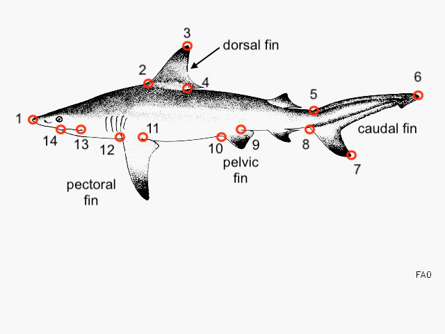
We want to store the names of these 14 landmarks so that
StereoMorphs digitizing function,
digitizeImates(), will know how many landmarks should be
placed on the images. If we make this vector of point names descriptive,
we’ll know where to place the points while we’re digitizing. Something
like this satisfies those two objectives nicely.
landmarks_ref <- c("1_snout", #tip of the snout
"2_dorsal_base_ant", #where the anterior base of the dorsal fin meets the body
"3_dorsal_tip", #apex of the dorsal fin
"4_dorsal_base_post",#where the posterior base of the dorsal fin meets the body
"5_cadual_base_dor",#where the anterior base of the caudal fin meets the body
"6_cadual_tip_dor", #tip of the dorsal lobe of caudal fin
"7_cadual_tip_vent", #tip of the ventral lobe of caudal fin
"8_caudal_base_vental", #where the postrio base of the caudal fin meets the body
"9_pelvic_base_post", #where the poster base of the pelvic fin meets the body
"10_pelvic_base_ant", #where the anterior base of the pelvic fin meets the body
"11_pect_base_post", #where the posterio base of the pectoral fin meets the body
"12_pect_base_ant", #where the anterior base of the pector fin meets the body
"13_mouth_post", #posterior margin of upper jaw/mouth
"14_mouth_ant") #anerior margin of mouthWith these preliminaries out of the way, we can now start digitizing
using digitizeImages(). Note that the
landmark.ref argument takes the landmark vector we just
created. Also note that the image.file and
shapes.file argument take our image and landmark
directories, respectively. Less crucially, we can also control how the
points will look in the session with these other arguments. Lastly,
notice that we don’t pass the output of digitizeImages() to
any object. That’s because the output is text files—we merely need to
run this function to produce the app we run to get them. Let’s do
that.
digitizeImages(image.file = image_directory,
shapes.file = landmark_directory,
landmarks.ref = landmarks_ref,
landmark.color.blur = "cyan", #colors for easy vieing.
landmark.color.focus = "yellow",
control.point.color.blur = "orchid",
control.point.color.focus = "hotpink",
landmark.radius = 5)Right away, you’ll notice the function produced a browser window in
RStudio (see below). StereoMorph uses the
shiny package to create an application interface.
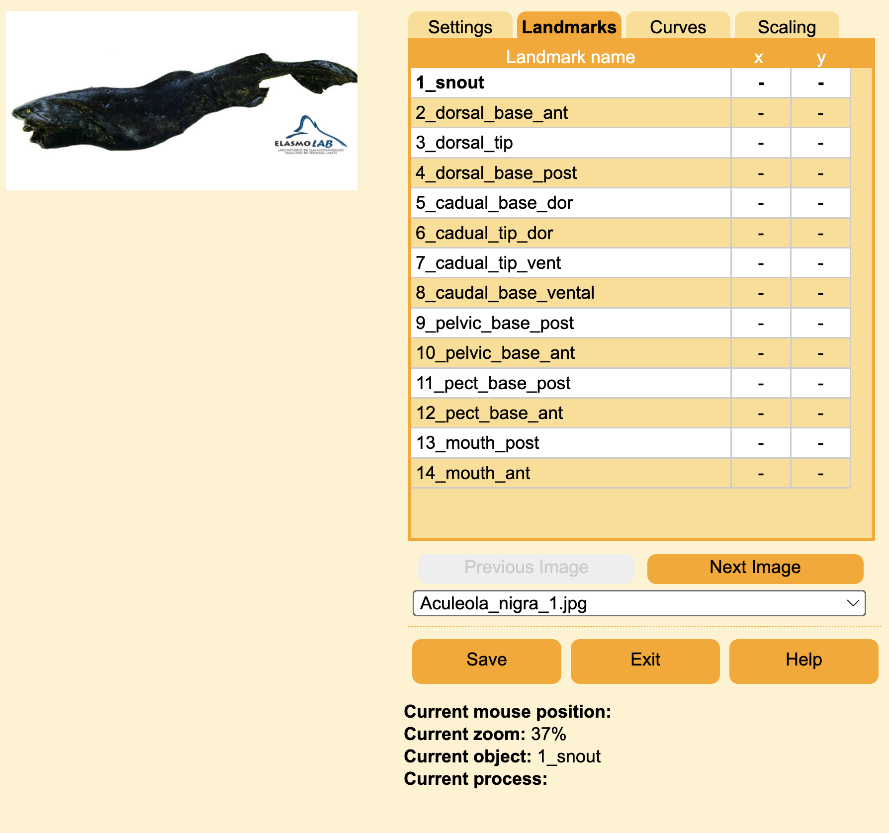
This browser window is small and cumbersome. It’s usually best to click on the “Open in Browser” button so that the same window will be loaded in your default web browers (e.g., Safari, Chrome, etc.)
This looks a lot better. Notice that the app displays the first image from you image directory as well as a series of tabs to the upper right, one each for “settings”, “landmarks”, “curves” and “scaling”. Click on the “settings” tab so that we can have a closer look and set some options that will make our digitizing easier.
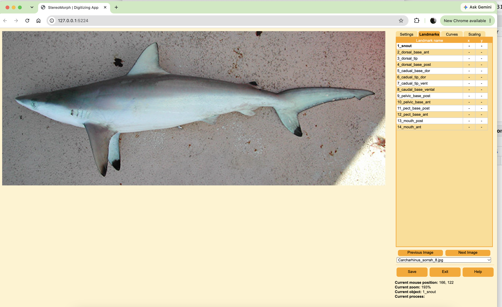
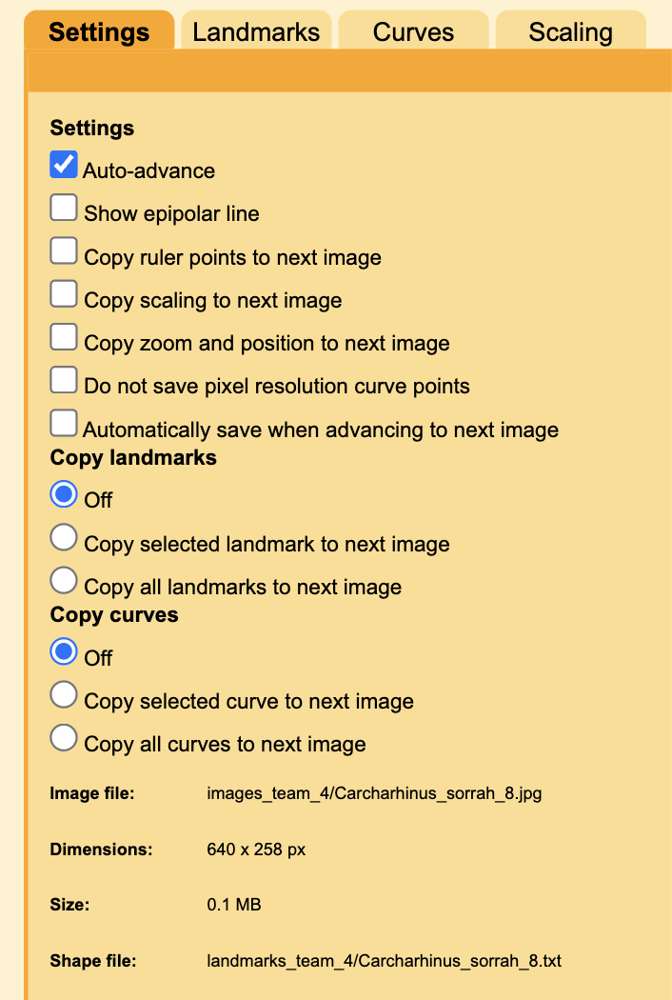
You’ll want select “Auto-advance”. This setting automatically advances to the next landmark after you place one on the image. Other options may be important for other projects, but autoadvance is perhaps the only beneficial one. Let’s now have a look at the landmarks tab, the business end of the app.
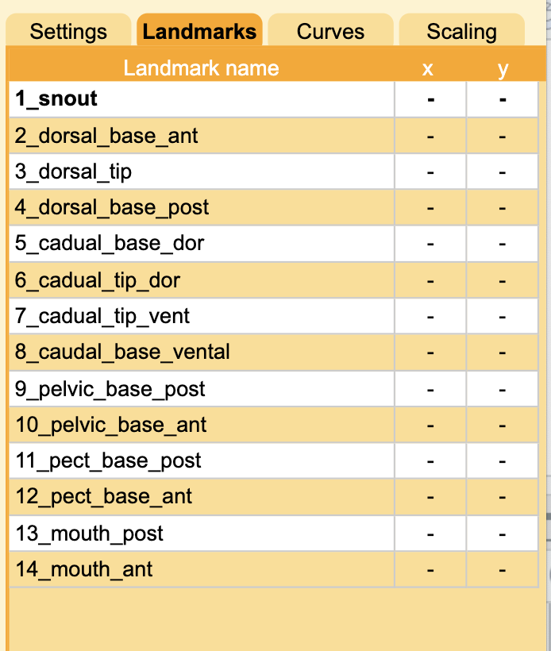
Notice that the character strings in our landmark_ref
vector populates a landmark list and the first “1_snout” is bolded,
indicating that this is the active point. That is, where you put the
cursor on the image and keystoke “x”, a coordinate will appear in that
bolded landmark line. Give it a shot: put the cursor somewhere near
where you want to mark the snout and type “x”. You’ll see that when you
type “x”, x-y coordinates appear, and, due to the autoadvance
setting, the next landmark, “2_dorsal_base_ant”, becomes bolded and
active. Continue on like this and you’ll very quickly have all 14
landmarks digitized. Once you’ve done this, click on “Save”. This will
tell the app to use some nifty R coded to output you landmark
coordinates as text file and do so in you chosen “shark_landmarks”
directory. Click “Next image” and you’re ready to do this again. You’ll
repeat this process for all the images your team is responsible for. In
the end, you’ll end up with 50 or so landmark files,
list.files("shark_landmarks") ## [1] "Aculeola_nigra_1.txt" "Aculeola_nigra_5.txt"
## [3] "Alopias_vulpinus_2.txt" "Apristurus_australis_5.txt"
## [5] "Apristurus_australis_7.txt" "Apristurus_manis_2.txt"
## [7] "Apristurus_sinensis_1.txt" "Asymbolus_rubiginosus_1.txt"
## [9] "Atelomycterus_baliensis_2.txt" "Atelomycterus_baliensis_3.txt"
## [11] "Atelomycterus_marmoratus_2.txt" "Bythaelurus_canescens_3.txt"
## [13] "Carcharhinus_amblyrhynchos_10.txt" "Carcharhinus_falciformis_2.txt"
## [15] "Carcharhinus_fitzroyensis_1.txt" "Carcharhinus_limbatus_1.txt"
## [17] "Carcharhinus_macloti_1.txt" "Carcharhinus_obscurus_1.txt"
## [19] "Carcharias_taurus_2.txt" "Centrophorus_granulosus_4.txt"
## [21] "Centrophorus_moluccensis_1.txt" "Centroscyllium_granulatum_5.txt"
## [23] "Centroscymnus_owstonii_3.txt" "Cephaloscyllium_albipinnum_1.txt"
## [25] "Chiloscyllium_hasseltii_1.txt" "Chlamydoselachus_anguineus_4.txt"
## [27] "Deania_calcea_5.txt" "Echinorhinus_brucus_2.txt"
## [29] "Etmopterus_granulosus_4.txt" "Galeocerdo_cuvier_5.txt"
## [31] "Galeorhinus_galeus_1.txt" "Galeus_polli_1.txt"
## [33] "Ginglymostoma_cirratum_3.txt" "Halaelurus_lineatus_1.txt"
## [35] "Hemipristis_elongata_1.txt" "Hemitriakis_leucoperiptera_1.txt"
## [37] "Heptranchias_perlo_7.txt" "Heterodontus_mexicanus_1.txt"
## [39] "Hexanchus_griseus_1.txt" "Iago_omanensis_1.txt"
## [41] "Mitsukurina_owstoni_3.txt" "Mustelus_lunulatus_1.txt"
## [43] "Mustelus_mosis_3.txt" "Nasolamia_velox_1.txt"
## [45] "Negaprion_acutidens_4.txt" "Orectolobus_ornatus_1.txt"
## [47] "Oxynotus_centrina_3.txt" "Prionace_glauca_4.txt"
## [49] "Pseudocarcharias_kamoharai_1.txt" "Rhizoprionodon_taylori_1.txt"
## [51] "Scoliodon_laticaudus_2.txt" "Scyliorhinus_canicula_6.txt"
## [53] "Somniosus_antarcticus_1.txt" "Sphyrna_zygaena_1.txt"
## [55] "Squalus_megalops_2.txt" "Triaenodon_obesus_1.txt"list.files("shark_landmarks") %>% length## [1] 56Note that the text files are automatically named according to the
image on which the landmarks are based. This is important for at least
two reasons. First, it’s easy keep link the landmarks back to the image,
leaving us capable of assessing the quality of the landmarks and images
later. Second, with the images in their directory and the landmarks in a
directory of their own, if you run digitizeImages() again,
exactly as before, the function links the landmarks files to the images
via the file names. Thus, this workflow establishes something like a
landmarking project that you can come back to, refining landmarks as
needed.
When digitizing with digitizeImages() and the app, a few
key strokes will be import for navigating through the landmark list:
- “x” produces a set of landmark coordinates
- “n” advances to the next landmark making it active
- “p” goes back to the previous landmark making it active
- “d” deletes the active landmark
After your team has completed landmarking the assigned species, push them to your teams repo in a “shark_landmarks” directory. Once all the data appear across the repos, Prof. Kenaley will evaluate the quality of the landmarks and do some post-processing if required (i.e., file-name checks, quality, etc.). He’ll them push the full dataset to all the team repos.
Superimposition
After digitizing landmarks, we must remove the distracting variations of size, orientation, and position that can vary between specimens and thus add noisey variables in analysis of shape. This can be mitigated by using a superimposition method. Generalized procrustes analysis (GPA) is the superimposition method of choice nowadays. GPA removes the variation of size, orientation, and position by superimposing the landmarks in a common coordinate system. The landmarks for all specimens are optimally translated, rotated, and scaled based on a least-squared estimation. The first step is translation and rotation to minimize the squared and summed differences (squared Procrustes distance) between landmarks on each specimen. Then the landmarks are individually scaled to the same units of centroid size. Centroid size is the square root of the sum of squared distances of the landmarks in configuration to their mean location. The translation, rotation, and scaling bring the landmark configurations for all specimens into a common coordinate system so that the only differing variables are based on shape alone. The new superimposed landmarks can now be analyzed in multivariate statistical analyses
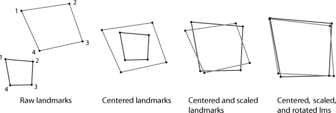
To perform a Procrustes superimposition on our landmark data—along
with many other analyses—we will turn the the geomorph
package. Please install and load geomorph. But, before we
do, let’s download and read in about 55 or so landmark files that
Prof. Kenaley produced ahead of this project. You can find these example
files here. You’ll have to
download this compressed directory and unzip it to your project
directory. You’ll also have to download and install the
abind package as well. Note: You can skip
this step if you’ve already completed your landmarking. Also note,
these are just your landmarks. You will need to
download the full data set evaluated by Prof. K.
To get started with superimposition, let’s load the package
geomorph. Weather you unzip the “shark_landmarks.zip”
directory to you project directory, or you’re working with the full
dataset, you have a folder named “shark_landmarks”, just as before. Our
first operation will be to read in the landmark in the “shark_landmarks”
directory using StereoMorph’s readShapes()
function. For work in geomorph, we need to convert this
object to a geomorphShapes object.
library(geomorph)## Warning: package 'geomorph' was built under R version 4.5.2## Loading required package: RRPP## Loading required package: Matrix##
## Attaching package: 'Matrix'## The following objects are masked from 'package:tidyr':
##
## expand, pack, unpack# load in landmarks
stereomorph_landmarks <- StereoMorph::readShapes(landmark_directory)
#convert
geomorph_landmarks <- geomorph::readland.shapes(stereomorph_landmarks)## Warning in GMfromShapes0(Shapes): No specimens have scaling. Unscaled landmarks imported, as a result#take a peak
head(geomorph_landmarks)## $landmarks
## $landmarks$Aculeola_nigra_1
## [,1] [,2]
## 1_snout 10 186
## 2_dorsal_base_ant 256 134
## 3_dorsal_tip 329 118
## 4_dorsal_base_post 338 109
## 5_cadual_base_dor 524 92
## 6_cadual_tip_dor 640 122
## 7_cadual_tip_vent 576 149
## 8_caudal_base_vental 519 115
## 9_pelvic_base_post 456 132
## 10_pelvic_base_ant 408 173
## 11_pect_base_post 193 210
## 12_pect_base_ant 171 228
## 13_mouth_post 56 214
## 14_mouth_ant 32 209
##
## $landmarks$Aculeola_nigra_5
## [,1] [,2]
## 1_snout 91 269
## 2_dorsal_base_ant 446 200
## 3_dorsal_tip 536 201
## 4_dorsal_base_post 508 212
## 5_cadual_base_dor 824 236
## 6_cadual_tip_dor 991 213
## 7_cadual_tip_vent 884 301
## 8_caudal_base_vental 790 264
## 9_pelvic_base_post 662 285
## 10_pelvic_base_ant 622 298
## 11_pect_base_post 368 306
## 12_pect_base_ant 333 283
## 13_mouth_post 189 286
## 14_mouth_ant 150 288
##
## $landmarks$Alopias_vulpinus_2
## [,1] [,2]
## 1_snout 38 225
## 2_dorsal_base_ant 157 190
## 3_dorsal_tip 185 144
## 4_dorsal_base_post 191 193
## 5_cadual_base_dor 319 206
## 6_cadual_tip_dor 608 153
## 7_cadual_tip_vent 331 263
## 8_caudal_base_vental 313 230
## 9_pelvic_base_post 248 239
## 10_pelvic_base_ant 220 245
## 11_pect_base_post 134 249
## 12_pect_base_ant 107 245
## 13_mouth_post 65 238
## 14_mouth_ant 52 237
##
## $landmarks$Apristurus_australis_5
## [,1] [,2]
## 1_snout 16 124
## 2_dorsal_base_ant 309 102
## 3_dorsal_tip 340 92
## 4_dorsal_base_post 331 101
## 5_cadual_base_dor 440 109
## 6_cadual_tip_dor 626 116
## 7_cadual_tip_vent 469 150
## 8_caudal_base_vental 419 134
## 9_pelvic_base_post 294 140
## 10_pelvic_base_ant 256 149
## 11_pect_base_post 184 147
## 12_pect_base_ant 151 151
## 13_mouth_post 52 135
## 14_mouth_ant 28 134
##
## $landmarks$Apristurus_australis_7
## [,1] [,2]
## 1_snout 50 171
## 2_dorsal_base_ant 500 146
## 3_dorsal_tip 546 140
## 4_dorsal_base_post 523 150
## 5_cadual_base_dor 672 163
## 6_cadual_tip_dor 949 169
## 7_cadual_tip_vent 741 217
## 8_caudal_base_vental 671 198
## 9_pelvic_base_post 481 202
## 10_pelvic_base_ant 420 209
## 11_pect_base_post 317 208
## 12_pect_base_ant 265 212
## 13_mouth_post 150 203
## 14_mouth_ant 112 198
##
## $landmarks$Apristurus_manis_2
## [,1] [,2]
## 1_snout 40 72
## 2_dorsal_base_ant 490 96
## 3_dorsal_tip 578 72
## 4_dorsal_base_post 552 90
## 5_cadual_base_dor 701 73
## 6_cadual_tip_dor 955 157
## 7_cadual_tip_vent 738 140
## 8_caudal_base_vental 677 108
## 9_pelvic_base_post 515 169
## 10_pelvic_base_ant 451 175
## 11_pect_base_post 286 165
## 12_pect_base_ant 251 163
## 13_mouth_post 147 137
## 14_mouth_ant 108 125
##
## $landmarks$Apristurus_sinensis_1
## [,1] [,2]
## 1_snout 39 227
## 2_dorsal_base_ant 596 183
## 3_dorsal_tip 642 170
## 4_dorsal_base_post 626 188
## 5_cadual_base_dor 787 184
## 6_cadual_tip_dor 1001 196
## 7_cadual_tip_vent 855 247
## 8_caudal_base_vental 772 227
## 9_pelvic_base_post 584 250
## 10_pelvic_base_ant 494 269
## 11_pect_base_post 316 275
## 12_pect_base_ant 273 279
## 13_mouth_post 156 267
## 14_mouth_ant 123 268
##
## $landmarks$Asymbolus_rubiginosus_1
## [,1] [,2]
## 1_snout 38 339
## 2_dorsal_base_ant 314 315
## 3_dorsal_tip 353 292
## 4_dorsal_base_post 350 318
## 5_cadual_base_dor 524 341
## 6_cadual_tip_dor 617 341
## 7_cadual_tip_vent 553 368
## 8_caudal_base_vental 522 355
## 9_pelvic_base_post 321 350
## 10_pelvic_base_ant 272 363
## 11_pect_base_post 158 365
## 12_pect_base_ant 127 365
## 13_mouth_post 68 358
## 14_mouth_ant 54 355
##
## $landmarks$Atelomycterus_baliensis_2
## [,1] [,2]
## 1_snout 53 234
## 2_dorsal_base_ant 661 182
## 3_dorsal_tip 800 85
## 4_dorsal_base_post 790 192
## 5_cadual_base_dor 1154 197
## 6_cadual_tip_dor 1435 140
## 7_cadual_tip_vent 1206 273
## 8_caudal_base_vental 1126 246
## 9_pelvic_base_post 678 269
## 10_pelvic_base_ant 593 286
## 11_pect_base_post 344 268
## 12_pect_base_ant 283 277
## 13_mouth_post 144 261
## 14_mouth_ant 107 262
##
## $landmarks$Atelomycterus_baliensis_3
## [,1] [,2]
## 1_snout 22 94
## 2_dorsal_base_ant 319 72
## 3_dorsal_tip 370 44
## 4_dorsal_base_post 361 80
## 5_cadual_base_dor 513 86
## 6_cadual_tip_dor 614 65
## 7_cadual_tip_vent 544 115
## 8_caudal_base_vental 507 104
## 9_pelvic_base_post 321 117
## 10_pelvic_base_ant 288 121
## 11_pect_base_post 156 114
## 12_pect_base_ant 128 111
## 13_mouth_post 64 112
## 14_mouth_ant 47 110
##
## $landmarks$Atelomycterus_marmoratus_2
## [,1] [,2]
## 1_snout 37 159
## 2_dorsal_base_ant 279 132
## 3_dorsal_tip 329 96
## 4_dorsal_base_post 321 133
## 5_cadual_base_dor 486 143
## 6_cadual_tip_dor 592 147
## 7_cadual_tip_vent 502 178
## 8_caudal_base_vental 473 164
## 9_pelvic_base_post 297 175
## 10_pelvic_base_ant 257 176
## 11_pect_base_post 162 174
## 12_pect_base_ant 131 173
## 13_mouth_post 79 174
## 14_mouth_ant 70 173
##
## $landmarks$Bythaelurus_canescens_3
## [,1] [,2]
## 1_snout 4 201
## 2_dorsal_base_ant 529 168
## 3_dorsal_tip 595 124
## 4_dorsal_base_post 593 166
## 5_cadual_base_dor 833 190
## 6_cadual_tip_dor 1022 186
## 7_cadual_tip_vent 868 243
## 8_caudal_base_vental 820 219
## 9_pelvic_base_post 583 226
## 10_pelvic_base_ant 530 253
## 11_pect_base_post 244 261
## 12_pect_base_ant 161 243
## 13_mouth_post 71 226
## 14_mouth_ant 47 224
##
## $landmarks$Carcharhinus_amblyrhynchos_10
## [,1] [,2]
## 1_snout 26 189
## 2_dorsal_base_ant 222 161
## 3_dorsal_tip 275 104
## 4_dorsal_base_post 281 172
## 5_cadual_base_dor 462 182
## 6_cadual_tip_dor 613 130
## 7_cadual_tip_vent 525 259
## 8_caudal_base_vental 464 201
## 9_pelvic_base_post 366 224
## 10_pelvic_base_ant 340 235
## 11_pect_base_post 175 224
## 12_pect_base_ant 150 227
## 13_mouth_post 93 223
## 14_mouth_ant 70 215
##
## $landmarks$Carcharhinus_falciformis_2
## [,1] [,2]
## 1_snout 20 119
## 2_dorsal_base_ant 222 92
## 3_dorsal_tip 265 44
## 4_dorsal_base_post 269 98
## 5_cadual_base_dor 459 129
## 6_cadual_tip_dor 610 86
## 7_cadual_tip_vent 506 192
## 8_caudal_base_vental 459 150
## 9_pelvic_base_post 340 157
## 10_pelvic_base_ant 324 164
## 11_pect_base_post 188 162
## 12_pect_base_ant 151 161
## 13_mouth_post 81 143
## 14_mouth_ant 58 142
##
## $landmarks$Carcharhinus_fitzroyensis_1
## [,1] [,2]
## 1_snout 65 272
## 2_dorsal_base_ant 519 142
## 3_dorsal_tip 689 13
## 4_dorsal_base_post 687 158
## 5_cadual_base_dor 1107 210
## 6_cadual_tip_dor 1447 90
## 7_cadual_tip_vent 1226 349
## 8_caudal_base_vental 1103 268
## 9_pelvic_base_post 837 312
## 10_pelvic_base_ant 780 333
## 11_pect_base_post 472 297
## 12_pect_base_ant 397 313
## 13_mouth_post 260 312
## 14_mouth_ant 188 311
##
## $landmarks$Carcharhinus_limbatus_1
## [,1] [,2]
## 1_snout 17 152
## 2_dorsal_base_ant 218 105
## 3_dorsal_tip 286 43
## 4_dorsal_base_post 275 115
## 5_cadual_base_dor 459 148
## 6_cadual_tip_dor 616 76
## 7_cadual_tip_vent 534 206
## 8_caudal_base_vental 459 173
## 9_pelvic_base_post 358 185
## 10_pelvic_base_ant 335 196
## 11_pect_base_post 197 194
## 12_pect_base_ant 158 183
## 13_mouth_post 88 170
## 14_mouth_ant 63 170
##
## $landmarks$Carcharhinus_macloti_1
## [,1] [,2]
## 1_snout 571 157
## 2_dorsal_base_ant 703 51
## 3_dorsal_tip 706 169
## 4_dorsal_base_post 1190 224
## 5_cadual_base_dor 1499 120
## 6_cadual_tip_dor 1283 365
## 7_cadual_tip_vent 1178 274
## 8_caudal_base_vental 893 297
## 9_pelvic_base_post 827 322
## 10_pelvic_base_ant 500 292
## 11_pect_base_post 437 301
## 12_pect_base_ant 298 291
## 13_mouth_post 241 283
## 14_mouth_ant 118 239
##
## $landmarks$Carcharhinus_obscurus_1
## [,1] [,2]
## 1_snout 504 177
## 2_dorsal_base_ant 635 59
## 3_dorsal_tip 638 209
## 4_dorsal_base_post 1085 277
## 5_cadual_base_dor 1404 51
## 6_cadual_tip_dor 1241 450
## 7_cadual_tip_vent 1082 329
## 8_caudal_base_vental 843 358
## 9_pelvic_base_post 747 369
## 10_pelvic_base_ant 435 337
## 11_pect_base_post 335 355
## 12_pect_base_ant 192 355
## 13_mouth_post 132 346
## 14_mouth_ant 25 299
##
## $landmarks$Carcharias_taurus_2
## [,1] [,2]
## 1_snout 264 131
## 2_dorsal_base_ant 309 105
## 3_dorsal_tip 304 142
## 4_dorsal_base_post 438 153
## 5_cadual_base_dor 592 133
## 6_cadual_tip_dor 491 202
## 7_cadual_tip_vent 447 178
## 8_caudal_base_vental 350 199
## 9_pelvic_base_post 316 203
## 10_pelvic_base_ant 208 209
## 11_pect_base_post 171 203
## 12_pect_base_ant 102 191
## 13_mouth_post 68 193
## 14_mouth_ant 40 181
##
## $landmarks$Centrophorus_granulosus_4
## [,1] [,2]
## 1_snout 209 60
## 2_dorsal_base_ant 269 29
## 3_dorsal_tip 283 64
## 4_dorsal_base_post 510 90
## 5_cadual_base_dor 623 64
## 6_cadual_tip_dor 542 142
## 7_cadual_tip_vent 491 107
## 8_caudal_base_vental 400 108
## 9_pelvic_base_post 379 119
## 10_pelvic_base_ant 170 109
## 11_pect_base_post 145 108
## 12_pect_base_ant 121 118
## 13_mouth_post 93 125
## 14_mouth_ant 11 106
##
## $landmarks$Centrophorus_moluccensis_1
## [,1] [,2]
## 1_snout 209 128
## 2_dorsal_base_ant 267 93
## 3_dorsal_tip 274 131
## 4_dorsal_base_post 489 160
## 5_cadual_base_dor 586 120
## 6_cadual_tip_dor 527 207
## 7_cadual_tip_vent 476 176
## 8_caudal_base_vental 381 183
## 9_pelvic_base_post 357 196
## 10_pelvic_base_ant 189 185
## 11_pect_base_post 163 186
## 12_pect_base_ant 110 182
## 13_mouth_post 93 187
## 14_mouth_ant 46 168
##
## $landmarks$Centroscyllium_granulatum_5
## [,1] [,2]
## 1_snout 382 223
## 2_dorsal_base_ant 485 204
## 3_dorsal_tip 464 238
## 4_dorsal_base_post 797 253
## 5_cadual_base_dor 993 227
## 6_cadual_tip_dor 860 321
## 7_cadual_tip_vent 781 288
## 8_caudal_base_vental 652 300
## 9_pelvic_base_post 604 324
## 10_pelvic_base_ant 311 317
## 11_pect_base_post 267 326
## 12_pect_base_ant 148 335
## 13_mouth_post 115 332
## 14_mouth_ant 37 294
##
## $landmarks$Centroscymnus_owstonii_3
## [,1] [,2]
## 1_snout 227 81
## 2_dorsal_base_ant 290 71
## 3_dorsal_tip 285 85
## 4_dorsal_base_post 513 125
## 5_cadual_base_dor 613 89
## 6_cadual_tip_dor 554 178
## 7_cadual_tip_vent 511 145
## 8_caudal_base_vental 444 145
## 9_pelvic_base_post 395 148
## 10_pelvic_base_ant 183 133
## 11_pect_base_post 159 131
## 12_pect_base_ant 83 134
## 13_mouth_post 62 141
## 14_mouth_ant 19 124
##
## $landmarks$Cephaloscyllium_albipinnum_1
## [,1] [,2]
## 1_snout 802 157
## 2_dorsal_base_ant 918 85
## 3_dorsal_tip 893 176
## 4_dorsal_base_post 1158 184
## 5_cadual_base_dor 1441 104
## 6_cadual_tip_dor 1274 279
## 7_cadual_tip_vent 1151 237
## 8_caudal_base_vental 803 253
## 9_pelvic_base_post 712 274
## 10_pelvic_base_ant 373 249
## 11_pect_base_post 307 283
## 12_pect_base_ant 191 263
## 13_mouth_post 130 268
## 14_mouth_ant 61 241
##
## $landmarks$Chiloscyllium_hasseltii_1
## [,1] [,2]
## 1_snout 31 95
## 2_dorsal_base_ant 265 74
## 3_dorsal_tip 306 56
## 4_dorsal_base_post 311 81
## 5_cadual_base_dor 438 93
## 6_cadual_tip_dor 598 95
## 7_cadual_tip_vent 499 123
## 8_caudal_base_vental 429 114
## 9_pelvic_base_post 271 116
## 10_pelvic_base_ant 238 121
## 11_pect_base_post 170 129
## 12_pect_base_ant 134 128
## 13_mouth_post 61 116
## 14_mouth_ant 51 116
##
## $landmarks$Chlamydoselachus_anguineus_4
## [,1] [,2]
## 1_snout 10 139
## 2_dorsal_base_ant 668 28
## 3_dorsal_tip 765 36
## 4_dorsal_base_post 744 48
## 5_cadual_base_dor 798 61
## 6_cadual_tip_dor 985 87
## 7_cadual_tip_vent 806 130
## 8_caudal_base_vental 752 84
## 9_pelvic_base_post 588 90
## 10_pelvic_base_ant 495 105
## 11_pect_base_post 177 109
## 12_pect_base_ant 142 124
## 13_mouth_post 64 139
## 14_mouth_ant 8 145
##
## $landmarks$Deania_calcea_5
## [,1] [,2]
## 1_snout 24 320
## 2_dorsal_base_ant 438 240
## 3_dorsal_tip 618 253
## 4_dorsal_base_post 562 260
## 5_cadual_base_dor 824 314
## 6_cadual_tip_dor 974 259
## 7_cadual_tip_vent 873 365
## 8_caudal_base_vental 817 341
## 9_pelvic_base_post 723 344
## 10_pelvic_base_ant 684 357
## 11_pect_base_post 331 317
## 12_pect_base_ant 291 332
## 13_mouth_post 186 353
## 14_mouth_ant 157 356
##
## $landmarks$Echinorhinus_brucus_2
## [,1] [,2]
## 1_snout 49 202
## 2_dorsal_base_ant 353 174
## 3_dorsal_tip 405 155
## 4_dorsal_base_post 385 178
## 5_cadual_base_dor 461 183
## 6_cadual_tip_dor 606 156
## 7_cadual_tip_vent 507 236
## 8_caudal_base_vental 436 218
## 9_pelvic_base_post 401 218
## 10_pelvic_base_ant 341 227
## 11_pect_base_post 228 218
## 12_pect_base_ant 184 217
## 13_mouth_post 119 215
## 14_mouth_ant 93 216
##
## $landmarks$Etmopterus_granulosus_4
## [,1] [,2]
## 1_snout 43 181
## 2_dorsal_base_ant 232 159
## 3_dorsal_tip 274 138
## 4_dorsal_base_post 264 159
## 5_cadual_base_dor 454 177
## 6_cadual_tip_dor 607 170
## 7_cadual_tip_vent 517 217
## 8_caudal_base_vental 446 193
## 9_pelvic_base_post 364 200
## 10_pelvic_base_ant 336 218
## 11_pect_base_post 209 204
## 12_pect_base_ant 176 198
## 13_mouth_post 126 198
## 14_mouth_ant 99 206
##
## $landmarks$Galeocerdo_cuvier_5
## [,1] [,2]
## 1_snout 37 120
## 2_dorsal_base_ant 206 86
## 3_dorsal_tip 262 56
## 4_dorsal_base_post 262 93
## 5_cadual_base_dor 473 148
## 6_cadual_tip_dor 630 140
## 7_cadual_tip_vent 520 201
## 8_caudal_base_vental 465 171
## 9_pelvic_base_post 341 162
## 10_pelvic_base_ant 325 166
## 11_pect_base_post 162 163
## 12_pect_base_ant 131 162
## 13_mouth_post 72 156
## 14_mouth_ant 52 140
##
## $landmarks$Galeorhinus_galeus_1
## [,1] [,2]
## 1_snout 34 198
## 2_dorsal_base_ant 209 159
## 3_dorsal_tip 254 116
## 4_dorsal_base_post 266 162
## 5_cadual_base_dor 483 185
## 6_cadual_tip_dor 613 153
## 7_cadual_tip_vent 537 239
## 8_caudal_base_vental 481 206
## 9_pelvic_base_post 350 216
## 10_pelvic_base_ant 321 221
## 11_pect_base_post 191 216
## 12_pect_base_ant 158 217
## 13_mouth_post 103 211
## 14_mouth_ant 83 211
##
## $landmarks$Galeus_polli_1
## [,1] [,2]
## 1_snout 47 195
## 2_dorsal_base_ant 309 164
## 3_dorsal_tip 348 143
## 4_dorsal_base_post 336 164
## 5_cadual_base_dor 471 178
## 6_cadual_tip_dor 601 154
## 7_cadual_tip_vent 483 222
## 8_caudal_base_vental 438 202
## 9_pelvic_base_post 325 214
## 10_pelvic_base_ant 270 219
## 11_pect_base_post 215 216
## 12_pect_base_ant 171 208
## 13_mouth_post 114 210
## 14_mouth_ant 90 211
##
## $landmarks$Ginglymostoma_cirratum_3
## [,1] [,2]
## 1_snout 55 646
## 2_dorsal_base_ant 795 522
## 3_dorsal_tip 948 421
## 4_dorsal_base_post 912 553
## 5_cadual_base_dor 1227 560
## 6_cadual_tip_dor 1562 355
## 7_cadual_tip_vent 1347 601
## 8_caudal_base_vental 1235 618
## 9_pelvic_base_post 877 656
## 10_pelvic_base_ant 762 677
## 11_pect_base_post 470 664
## 12_pect_base_ant 371 675
## 13_mouth_post 92 678
## 14_mouth_ant 76 674
##
## $landmarks$Halaelurus_lineatus_1
## [,1] [,2]
## 1_snout 44 195
## 2_dorsal_base_ant 274 172
## 3_dorsal_tip 315 149
## 4_dorsal_base_post 310 178
## 5_cadual_base_dor 493 181
## 6_cadual_tip_dor 600 170
## 7_cadual_tip_vent 539 204
## 8_caudal_base_vental 489 196
## 9_pelvic_base_post 284 209
## 10_pelvic_base_ant 241 216
## 11_pect_base_post 156 212
## 12_pect_base_ant 128 213
## 13_mouth_post 82 205
## 14_mouth_ant 72 207
##
## $landmarks$Hemipristis_elongata_1
## [,1] [,2]
## 1_snout 50 197
## 2_dorsal_base_ant 200 160
## 3_dorsal_tip 264 116
## 4_dorsal_base_post 264 164
## 5_cadual_base_dor 463 191
## 6_cadual_tip_dor 604 171
## 7_cadual_tip_vent 512 239
## 8_caudal_base_vental 461 206
## 9_pelvic_base_post 336 221
## 10_pelvic_base_ant 294 219
## 11_pect_base_post 181 220
## 12_pect_base_ant 155 224
## 13_mouth_post 97 210
## 14_mouth_ant 80 212
##
## $landmarks$Hemitriakis_leucoperiptera_1
## [,1] [,2]
## 1_snout 34 209
## 2_dorsal_base_ant 207 150
## 3_dorsal_tip 268 113
## 4_dorsal_base_post 261 157
## 5_cadual_base_dor 490 208
## 6_cadual_tip_dor 609 173
## 7_cadual_tip_vent 538 244
## 8_caudal_base_vental 493 224
## 9_pelvic_base_post 332 222
## 10_pelvic_base_ant 295 224
## 11_pect_base_post 171 220
## 12_pect_base_ant 148 230
## 13_mouth_post 84 222
## 14_mouth_ant 70 222
##
## $landmarks$Heptranchias_perlo_7
## [,1] [,2]
## 1_snout 15 94
## 2_dorsal_base_ant 311 94
## 3_dorsal_tip 348 73
## 4_dorsal_base_post 341 98
## 5_cadual_base_dor 436 111
## 6_cadual_tip_dor 619 94
## 7_cadual_tip_vent 468 159
## 8_caudal_base_vental 438 139
## 9_pelvic_base_post 288 138
## 10_pelvic_base_ant 260 146
## 11_pect_base_post 147 135
## 12_pect_base_ant 128 135
## 13_mouth_post 85 126
## 14_mouth_ant 45 117
##
## $landmarks$Heterodontus_mexicanus_1
## [,1] [,2]
## 1_snout 68 228
## 2_dorsal_base_ant 49 219
## 3_dorsal_tip 223 143
## 4_dorsal_base_post 277 106
## 5_cadual_base_dor 270 147
## 6_cadual_tip_dor 482 196
## 7_cadual_tip_vent 593 170
## 8_caudal_base_vental 527 249
## 9_pelvic_base_post 488 220
## 10_pelvic_base_ant 334 217
## 11_pect_base_post 293 232
## 12_pect_base_ant 196 226
## 13_mouth_post 173 233
## 14_mouth_ant 83 228
##
## $landmarks$Hexanchus_griseus_1
## [,1] [,2]
## 1_snout 41 90
## 2_dorsal_base_ant 14 71
## 3_dorsal_tip 355 54
## 4_dorsal_base_post 396 32
## 5_cadual_base_dor 403 63
## 6_cadual_tip_dor 442 62
## 7_cadual_tip_vent 631 44
## 8_caudal_base_vental 490 112
## 9_pelvic_base_post 449 89
## 10_pelvic_base_ant 420 92
## 11_pect_base_post 389 106
## 12_pect_base_ant 176 106
## 13_mouth_post 137 99
## 14_mouth_ant 78 93
##
## $landmarks$Iago_omanensis_1
## [,1] [,2]
## 1_snout 26 218
## 2_dorsal_base_ant 182 169
## 3_dorsal_tip 243 123
## 4_dorsal_base_post 248 180
## 5_cadual_base_dor 484 202
## 6_cadual_tip_dor 609 169
## 7_cadual_tip_vent 513 239
## 8_caudal_base_vental 477 220
## 9_pelvic_base_post 322 234
## 10_pelvic_base_ant 282 242
## 11_pect_base_post 206 234
## 12_pect_base_ant 172 233
## 13_mouth_post 88 232
## 14_mouth_ant 66 229
##
## $landmarks$Mitsukurina_owstoni_3
## [,1] [,2]
## 1_snout 23 195
## 2_dorsal_base_ant 230 187
## 3_dorsal_tip 280 176
## 4_dorsal_base_post 264 191
## 5_cadual_base_dor 425 198
## 6_cadual_tip_dor 618 195
## 7_cadual_tip_vent 470 243
## 8_caudal_base_vental 428 218
## 9_pelvic_base_post 345 225
## 10_pelvic_base_ant 300 230
## 11_pect_base_post 215 222
## 12_pect_base_ant 192 224
## 13_mouth_post 113 223
## 14_mouth_ant 55 217
##
## $landmarks$Mustelus_lunulatus_1
## [,1] [,2]
## 1_snout 63 250
## 2_dorsal_base_ant 458 145
## 3_dorsal_tip 594 22
## 4_dorsal_base_post 620 161
## 5_cadual_base_dor 1163 225
## 6_cadual_tip_dor 1445 187
## 7_cadual_tip_vent 1258 330
## 8_caudal_base_vental 1155 267
## 9_pelvic_base_post 767 277
## 10_pelvic_base_ant 700 293
## 11_pect_base_post 378 279
## 12_pect_base_ant 331 298
## 13_mouth_post 210 292
## 14_mouth_ant 171 292
##
## $landmarks$Mustelus_mosis_3
## [,1] [,2]
## 1_snout 22 148
## 2_dorsal_base_ant 195 111
## 3_dorsal_tip 256 56
## 4_dorsal_base_post 256 119
## 5_cadual_base_dor 511 139
## 6_cadual_tip_dor 616 81
## 7_cadual_tip_vent 564 167
## 8_caudal_base_vental 513 158
## 9_pelvic_base_post 325 169
## 10_pelvic_base_ant 303 176
## 11_pect_base_post 166 165
## 12_pect_base_ant 146 166
## 13_mouth_post 84 166
## 14_mouth_ant 74 166
##
## $landmarks$Nasolamia_velox_1
## [,1] [,2]
## 1_snout 41 238
## 2_dorsal_base_ant 228 198
## 3_dorsal_tip 297 159
## 4_dorsal_base_post 284 203
## 5_cadual_base_dor 445 226
## 6_cadual_tip_dor 594 207
## 7_cadual_tip_vent 504 286
## 8_caudal_base_vental 451 244
## 9_pelvic_base_post 339 254
## 10_pelvic_base_ant 317 259
## 11_pect_base_post 214 252
## 12_pect_base_ant 185 255
## 13_mouth_post 114 252
## 14_mouth_ant 99 251
##
## $landmarks$Negaprion_acutidens_4
## [,1] [,2]
## 1_snout 19 145
## 2_dorsal_base_ant 253 105
## 3_dorsal_tip 322 51
## 4_dorsal_base_post 313 113
## 5_cadual_base_dor 518 103
## 6_cadual_tip_dor 634 30
## 7_cadual_tip_vent 580 144
## 8_caudal_base_vental 517 124
## 9_pelvic_base_post 397 152
## 10_pelvic_base_ant 358 161
## 11_pect_base_post 192 165
## 12_pect_base_ant 162 167
## 13_mouth_post 78 164
## 14_mouth_ant 41 163
##
## $landmarks$Orectolobus_ornatus_1
## [,1] [,2]
## 1_snout 43 211
## 2_dorsal_base_ant 322 196
## 3_dorsal_tip 358 160
## 4_dorsal_base_post 365 204
## 5_cadual_base_dor 481 209
## 6_cadual_tip_dor 601 207
## 7_cadual_tip_vent 491 239
## 8_caudal_base_vental 456 234
## 9_pelvic_base_post 327 236
## 10_pelvic_base_ant 279 253
## 11_pect_base_post 190 234
## 12_pect_base_ant 144 243
## 13_mouth_post 78 235
## 14_mouth_ant 48 225
##
## $landmarks$Oxynotus_centrina_3
## [,1] [,2]
## 1_snout 26 219
## 2_dorsal_base_ant 185 164
## 3_dorsal_tip 257 100
## 4_dorsal_base_post 260 176
## 5_cadual_base_dor 479 206
## 6_cadual_tip_dor 605 145
## 7_cadual_tip_vent 544 248
## 8_caudal_base_vental 477 236
## 9_pelvic_base_post 424 241
## 10_pelvic_base_ant 378 259
## 11_pect_base_post 172 245
## 12_pect_base_ant 135 239
## 13_mouth_post 70 243
## 14_mouth_ant 58 241
##
## $landmarks$Prionace_glauca_4
## [,1] [,2]
## 1_snout 41 200
## 2_dorsal_base_ant 242 176
## 3_dorsal_tip 283 133
## 4_dorsal_base_post 285 176
## 5_cadual_base_dor 464 199
## 6_cadual_tip_dor 601 163
## 7_cadual_tip_vent 517 265
## 8_caudal_base_vental 461 218
## 9_pelvic_base_post 349 225
## 10_pelvic_base_ant 321 230
## 11_pect_base_post 190 227
## 12_pect_base_ant 161 222
## 13_mouth_post 104 215
## 14_mouth_ant 83 219
##
## $landmarks$Pseudocarcharias_kamoharai_1
## [,1] [,2]
## 1_snout 12 90
## 2_dorsal_base_ant 261 60
## 3_dorsal_tip 302 44
## 4_dorsal_base_post 315 63
## 5_cadual_base_dor 502 76
## 6_cadual_tip_dor 629 51
## 7_cadual_tip_vent 549 134
## 8_caudal_base_vental 503 96
## 9_pelvic_base_post 431 104
## 10_pelvic_base_ant 392 113
## 11_pect_base_post 165 108
## 12_pect_base_ant 144 115
## 13_mouth_post 83 106
## 14_mouth_ant 54 112
##
## $landmarks$Rhizoprionodon_taylori_1
## [,1] [,2]
## 1_snout 21 134
## 2_dorsal_base_ant 214 80
## 3_dorsal_tip 262 34
## 4_dorsal_base_post 267 89
## 5_cadual_base_dor 495 121
## 6_cadual_tip_dor 620 107
## 7_cadual_tip_vent 525 173
## 8_caudal_base_vental 485 140
## 9_pelvic_base_post 331 148
## 10_pelvic_base_ant 307 154
## 11_pect_base_post 188 149
## 12_pect_base_ant 149 152
## 13_mouth_post 86 147
## 14_mouth_ant 69 146
##
## $landmarks$Scoliodon_laticaudus_2
## [,1] [,2]
## 1_snout 18 106
## 2_dorsal_base_ant 231 74
## 3_dorsal_tip 279 36
## 4_dorsal_base_post 288 80
## 5_cadual_base_dor 476 106
## 6_cadual_tip_dor 605 88
## 7_cadual_tip_vent 504 156
## 8_caudal_base_vental 469 130
## 9_pelvic_base_post 330 144
## 10_pelvic_base_ant 302 150
## 11_pect_base_post 177 142
## 12_pect_base_ant 146 139
## 13_mouth_post 79 123
## 14_mouth_ant 66 122
##
## $landmarks$Scyliorhinus_canicula_6
## [,1] [,2]
## 1_snout 17 495
## 2_dorsal_base_ant 974 430
## 3_dorsal_tip 1149 349
## 4_dorsal_base_post 1122 446
## 5_cadual_base_dor 1606 446
## 6_cadual_tip_dor 1906 257
## 7_cadual_tip_vent 1736 529
## 8_caudal_base_vental 1595 509
## 9_pelvic_base_post 929 567
## 10_pelvic_base_ant 811 591
## 11_pect_base_post 442 564
## 12_pect_base_ant 336 564
## 13_mouth_post 183 565
## 14_mouth_ant 150 564
##
## $landmarks$Somniosus_antarcticus_1
## [,1] [,2]
## 1_snout 5 180
## 2_dorsal_base_ant 352 140
## 3_dorsal_tip 384 133
## 4_dorsal_base_post 387 147
## 5_cadual_base_dor 559 165
## 6_cadual_tip_dor 617 131
## 7_cadual_tip_vent 617 232
## 8_caudal_base_vental 553 191
## 9_pelvic_base_post 486 203
## 10_pelvic_base_ant 477 212
## 11_pect_base_post 247 245
## 12_pect_base_ant 214 230
## 13_mouth_post 94 223
## 14_mouth_ant 58 226
##
## $landmarks$Sphyrna_zygaena_1
## [,1] [,2]
## 1_snout 16 132
## 2_dorsal_base_ant 205 107
## 3_dorsal_tip 270 49
## 4_dorsal_base_post 265 112
## 5_cadual_base_dor 466 130
## 6_cadual_tip_dor 621 109
## 7_cadual_tip_vent 503 196
## 8_caudal_base_vental 463 153
## 9_pelvic_base_post 353 165
## 10_pelvic_base_ant 334 174
## 11_pect_base_post 195 181
## 12_pect_base_ant 166 175
## 13_mouth_post 86 153
## 14_mouth_ant 73 155
##
## $landmarks$Squalus_megalops_2
## [,1] [,2]
## 1_snout 30 94
## 2_dorsal_base_ant 203 68
## 3_dorsal_tip 252 42
## 4_dorsal_base_post 242 77
## 5_cadual_base_dor 500 119
## 6_cadual_tip_dor 610 112
## 7_cadual_tip_vent 531 177
## 8_caudal_base_vental 498 135
## 9_pelvic_base_post 326 117
## 10_pelvic_base_ant 299 128
## 11_pect_base_post 168 105
## 12_pect_base_ant 151 105
## 13_mouth_post 79 105
## 14_mouth_ant 67 108
##
## $landmarks$Triaenodon_obesus_1
## [,1] [,2]
## 1_snout 16 121
## 2_dorsal_base_ant 226 99
## 3_dorsal_tip 294 51
## 4_dorsal_base_post 270 104
## 5_cadual_base_dor 466 133
## 6_cadual_tip_dor 621 77
## 7_cadual_tip_vent 530 187
## 8_caudal_base_vental 461 150
## 9_pelvic_base_post 314 156
## 10_pelvic_base_ant 290 162
## 11_pect_base_post 150 150
## 12_pect_base_ant 125 153
## 13_mouth_post 59 145
## 14_mouth_ant 39 143
##
##
## $fixed
## [1] 1 2 3 4 5 6 7 8 9 10 11 12 13 14
##
## $sliders
## NULL
##
## $curves
## NULL
##
## $n
## [1] 56
##
## $p
## [1] 14Landmarks stored in a geomorphShapes object are done so
in a 3-dimensional array, that is, essentially a list of similarly sized
2D matrices, where the position the \(i^{th}\) matrix is in the \(i^{th}\) index of the third dimension,
i.e., array[,,i]. This is a little wonky, but it’s how
geomorph functions expect landmarks to be arranged.
With a proper geomorphShapes object in place, we’re now
free to move on the superimposition with the geomorph
function gpagen(). We’ll do this saving the output to
gpa and plot the the 14 aligned and superimposed landmarks
for all the specimens.
#gpa
gpa <- gpagen(geomorph_landmarks,ProcD = F )##
## Performing GPA
## | | | 0% | |================== | 25% | |=================================== | 50% | |==================================================== | 75% | |======================================================================| 100%
##
## Making projections... Finished!#plot superimposition
plot(gpa)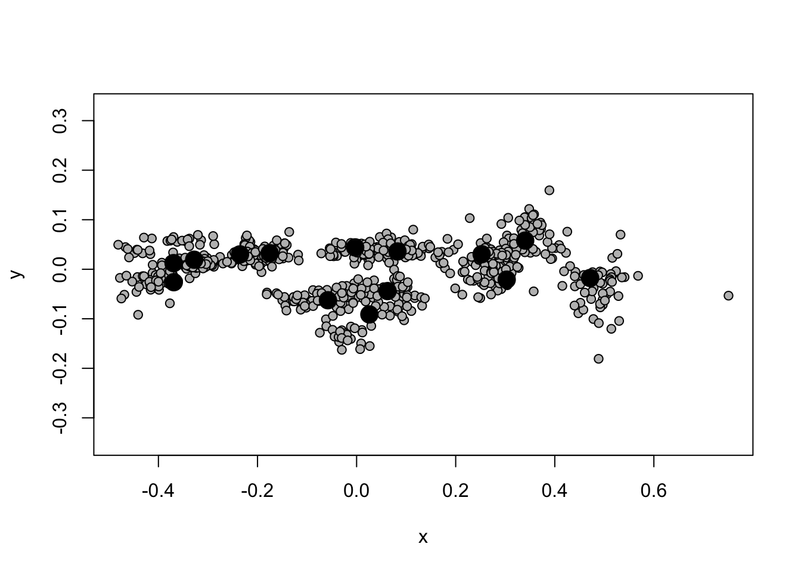
We’re now read to start analyzing the data.
Analysis Part I: A Morphospace
In geometric morphometric analysis, researchers first turn to describing the axes of shape variation. Indeed, this is what Sternes and Shimada (2020) did to produce the figure above. This and what we’re after is often termed a morphospace, a representation of the shape the study group does and does not have.
To develop such a thing, biologist usually turn to Principal
Components Analysis (PCA) whereby a very complicated suite of variables
is distilled into a set of fewer variables that describe the important
variance among the original variables. The coordinates contained in our
ldk_al object describe dozens of variables: scaled
distances between all the landmarks. So we have many variable to
consider and this becomes, very quickly, a serious multivariate
problem. PCA is suited to multivariate analysis because it reduces
the complexity of the data, taking many variables and distilling them
into just a few. At its core, PCA produces a series of regressions, or
vectors, that pass through the values of the original variables. This
operation is performed iteratively, with the first vector (the first
principal component, PC1), drawn through the variable space that
accounts for the most variance in the data set. After the combination of
variables forming PC1 is removed, a subsequent vector (PC2) is drawn
through another unique variable space that describes the second most
amount of variance. This continues until most of the variance is
captured, resulting in scores of PCs. The first two or three, however,
are usually enough to describe a health amount of variance, say 90% or
more.
To perform PCA, we’ll use geomorphs
gm.prcomp() function like so, working the the
gpa object’s coordinates, that is the 3-D array that
contains the Procrustes aligned landmakrs. Plotting reveals our first
result.
#PCA
pca <- gm.prcomp(gpa$coords)
#visualize
plot(pca)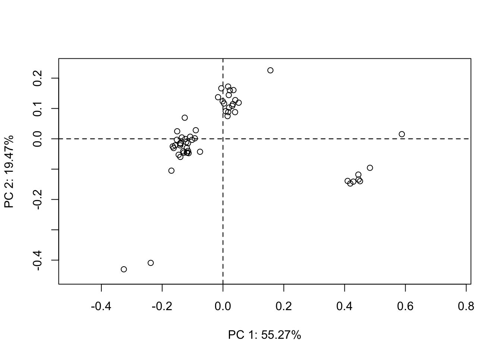
Wow, now we’re getting close to the Sternes and Shimada (2020) results and answering, at least in part, one of our questions: Does habitat result in different body shapes. But let’s break down what this plot means first. By default, when we plot a PCA object, the first two PCs are plotted, PC1 on the x axis, PC2 on the y. Each point represents the PC scores for a specimen in the data set. Notice that the amount of variance explained by our PCs is given and, as expected, PC1 contains most of the variance (55%) and PC2 considerably less less (19%). If we plot again, but specify a different combination of PCs, say 1 and 3, we get a different plot, of course. Notice the variance explained by PC3 is predictably less than that of PC2.
plot(pca,1,3)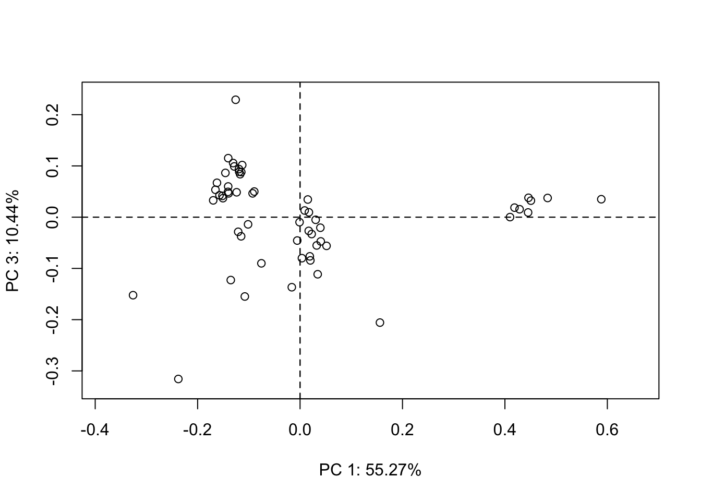
OK, so based on our PC plots, it looks as if we have two groupings, just like Sternes and Shimada (2020). But, do these groups correspond to largely pelagic vs. benthic species? It’s hard to tell. We don’t really know because we don’t know which species belong to each point in our plots, nor their habitat.
Notice, however, that the names of the coordinates in
gpa$coords are pegged to the image and landmark file names.
These names, are in fact, important metadata: data about the data. In
this case, the metadata are species names and, because we have images of
multiple specimens for each species, the specimen number
head(dimnames(gpa$coords)[[3]])## [1] "Aculeola_nigra_1" "Aculeola_nigra_5" "Alopias_vulpinus_2"
## [4] "Apristurus_australis_5" "Apristurus_australis_7" "Apristurus_manis_2"These values were maintained throughout the superimpositon step and
in the PCA operation. The coordinates plotted in the PCA plots are
contained in a matrix named x in our pca
object. Notice the row names:
pca$x %>% data.frame %>% dplyr::select(Comp1,Comp2) %>% head## Comp1 Comp2
## Aculeola_nigra_1 -0.075506918 -0.04270842
## Aculeola_nigra_5 -0.120792377 -0.01107569
## Alopias_vulpinus_2 -0.125778471 0.06951712
## Apristurus_australis_5 0.022652374 0.15989950
## Apristurus_australis_7 -0.005494344 0.16647518
## Apristurus_manis_2 0.019040037 0.14422777So, we have the species names from whence the data, both landmark and PCA, came. Fortunately, Professor Kenaley assembled a table containing of all the the species for landmarking, and the species and habitat for each. You can download this file and read in the data.
What’s left to do in exploring if benthic and pelagic sharks occupy
different morphospace is to combine this information with the PC scores
in pca$x. Let’s first load the shark data and consider how
we’ll join it to our PCA data using species as the key.
#sneak a peak
head(shark_dat)## # A tibble: 6 × 3
## sp PCL habitat
## <chr> <dbl> <chr>
## 1 Aculeola nigra 40.4 benthic
## 2 Alopias pelagicus 164. pelagic
## 3 Alopias superciliosus 272. pelagic
## 4 Alopias vulpinus 290. pelagic
## 5 Apristurus albisoma 42.9 benthic
## 6 Apristurus ampliceps 85.5 benthicSo here we have a tibble that contains species, precaudal length (PCL), and habitat data. Our goal is to join these data to our PCA, and later, coordinate data. But how. Our PCA and coordinated data have the species information, but that name also included the specimen number. That is, “Aculeola nigra” in our shark data won’t match “Aculeola_nigra_1” in our PCA and landmark data. To rip the species name out of the the PCA and coordinate data, let’s turn to ‘grep’ (general regular expressions) functions.
PCA <- pca$x %>%
data.frame %>%
dplyr::select(Comp1:Comp4) %>%
rownames_to_column("sp_spec") %>%
mutate(sp=gsub("(.*)_(.*)_.*","\\1 \\2",sp_spec),
spec=gsub(".*_.*_(.*)","\\1",sp_spec)) %>%
left_join(shark_dat)## Joining with `by = join_by(sp)`head(PCA)## sp_spec Comp1 Comp2 Comp3 Comp4
## 1 Aculeola_nigra_1 -0.075506918 -0.04270842 -0.09005305 -0.1045345209
## 2 Aculeola_nigra_5 -0.120792377 -0.01107569 -0.02855598 -0.0708372690
## 3 Alopias_vulpinus_2 -0.125778471 0.06951712 0.22911336 -0.0006552325
## 4 Apristurus_australis_5 0.022652374 0.15989950 -0.03293028 0.0455306233
## 5 Apristurus_australis_7 -0.005494344 0.16647518 -0.04562222 0.0604060521
## 6 Apristurus_manis_2 0.019040037 0.14422777 -0.07646664 0.0218615481
## sp spec PCL habitat
## 1 Aculeola nigra 1 40.4 benthic
## 2 Aculeola nigra 5 40.4 benthic
## 3 Alopias vulpinus 2 289.8 pelagic
## 4 Apristurus australis 5 43.4 benthic
## 5 Apristurus australis 7 43.4 benthic
## 6 Apristurus manis 2 51.5 benthicWith that over with, we can dispense with the ugly PCA plots above
and use ggplot to visualize our results with respect to
habitat.
PCA %>%
ggplot(aes(Comp1,Comp2,col=habitat))+geom_point()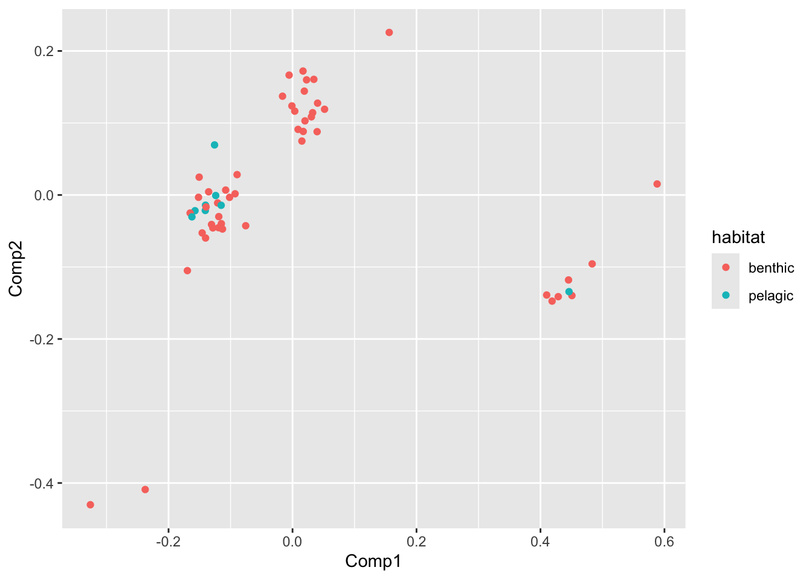
PCA %>%
ggplot(aes(Comp1,Comp3,col=habitat))+geom_point()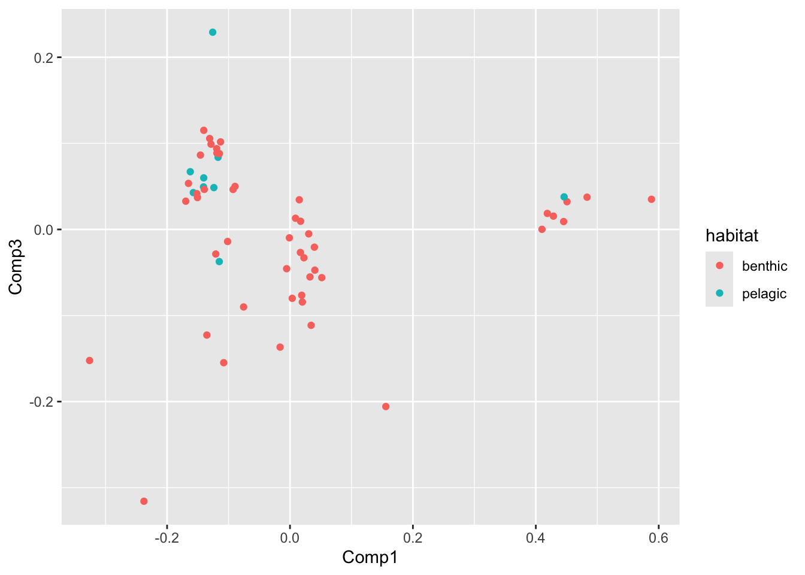
Voila! For morphospace described by PCs 1, 2, and 3, it appeears that benthic species inhabit a specific region of morphospace.
This is wonderful, but you may be asking, “What is PC1 (or any other) describing?” Our PCs points are abstractions of shape, but they don’t represent explicitly what shape that is. To get a sense of what our PCs represent in terms of shape values, we can turn to thin-plate spline analysis.
Note: you’re not asked to do anything like this for the report. Prof. K just wants to show you how you can derive shape changes represented by the PC axes.
#find min and max of each PC
max_PC1 <- which.max(pca$x[,1])
min_PC1 <- which.min(pca$x[,1])
max_PC2 <- which.max(pca$x[,2])
min_PC2 <- which.min(pca$x[,2])
#get the concesus, the mean shape of all data.
M <- gpa$consensus
#plot
par(mfrow=c(2,2))
#plot the change form the concensus to min of PC1
plotRefToTarget(M, gpa$coords[,,min_PC1], mag = 1,method="vector",label = T)
title("min PC1 warp",cex=0.6)
#plot the change form the concensus to max of PC1
plotRefToTarget(M, gpa$coords[,,max_PC1], mag = 1,method="vector",label = T)
title("max PC1 warp",cex=0.6)
#plot the change form the concensus to min of PC2
plotRefToTarget(M, gpa$coords[,,min_PC2], mag = 1,method="vector",label = T)
title("min PC2 warp",cex=0.6)
#plot the change form the concensus to max of PC2
plotRefToTarget(M, gpa$coords[,,max_PC2], mag = 1,method="vector",label = T)
title("max PC3 warp",cex=0.6)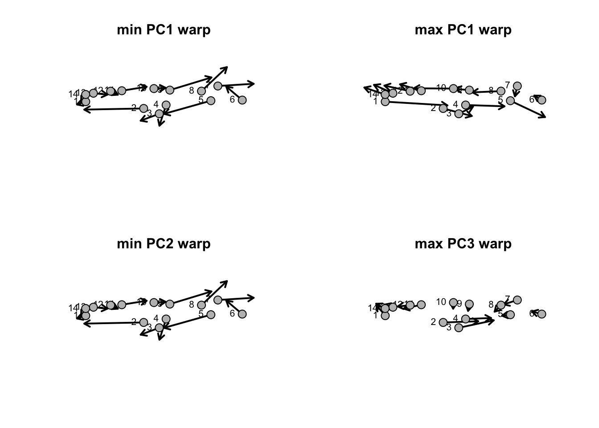
So, it looks like PC1 describes a shape change involving the placement of the dorsal fin (points 2-4) and pelvic fin (points 9 and 10). Lower values represent of PC1 represent a dorsal and pelvic fin that’re displaced posteriorly while higher values represent anterior placements. PC2 largely describes a shape change involving a the size of the cadual fin (points 5-8). Notice how low PC2 values represent shifts of points 5 and 8 (the start of the caudal fin) and 7 (the ventral lobe) to the anterior and a shift of point 8 (the dorsal lobe) to the posterior (i.e. elongation). High PC2 values represent a compression of the caudal fin length with point 8 (the dorsal lobe) shifted anteriorly.
And, with a little help from the package ggimage we can
plot images representing the extrema of the first two PCs. Notice the
anterior shift of the dorsal fin along PC1 and the shortening of the
caudal fin along PC2.
library(ggimage)
PC_extremes <- PCA %>%
filter(Comp1 %in% range(Comp1)|
Comp2 %in% range(Comp2)) %>%
mutate(file_name=paste0(sp_spec,".jpg")) %>%
dplyr::select(Comp1,Comp2,sp,file_name) %>%
mutate(imgs =paste0("shark_images/",file_name))
p1 <- PCA %>%
ggplot(aes(Comp1,Comp2,col=habitat))+geom_point()
p1 + geom_image(data=PC_extremes,aes(Comp1,Comp2,image=imgs), size=.30,inherit.aes = F)+theme_classic()+xlim(range(PC_extremes$Comp1)*1.5)+ylim(range(PC_extremes$Comp2)*1.25)+theme(legend.position = c(0.1,0.2))
Analysis: Part II
Our PCA analysis reveals an interesting pattern. This, however, is
not quantitative assessment per se, merely a visual and
qualitative result and not dissimilar to the qualitative results
reported by Sternes and Shimada (2020).
Several quantitative frameworks for assessing differences in shape
exist. The geomorph package contains several, but we’ll use
just one: a phylogenetically informed Procrustes ANOVA. The function
procD.pgls() will do this for us. Like with our anole
project in which we fit univariate traits with PGLS,
procD.pgls() fits a phylogenetic generalized least-squares
model for multivariatedata under a Brownian motion model of
evolution.
As with out PGLS model fitting in the anole project, we need a tree
and the tree from Stein et al. (2018) mentioned above is the
most comprehensive. Once this tree file is downloaded, let’s load, read
it, in and store it to an object named phy. Notice you’ll
need the phytools package and the function
readNexus().
library(phytools)## Loading required package: ape##
## Attaching package: 'ape'## The following object is masked from 'package:dplyr':
##
## where## Loading required package: maps##
## Attaching package: 'maps'## The following object is masked from 'package:purrr':
##
## mapphy <- readNexus("data/shark_trees.nex")
length(phy)## [1] 500Next let’s, restrict our tree file to those species in our data set.
For this, we’ll used ape’s keep.tip() which
keeps only the tips in a vector, in this case, the species in our PCA
and landmark analysis.
sp <- intersect(phy[[1]]$tip.label,PCA$sp %>% unique)
phy2 <- keep.tip(phy,PCA$sp)To undertake the analysis with procD.pgls(), we must
input the tree of course and a geomorph.dataframe, a
special data frame that includes the coordinates and variables (i.e.,
habitat) that will be in the model. But, as we’ve discussed above, we
have several specimens per species and thus multiple observations for
each tip in the tree. procD.pgls() can’t handle that. A
common solution to such a problem is to just calculate the mean values
of each species. For this, we can turn to a custom function that uses
geomorph’s mshape function to compute the mean
shape of each species. It will compute the mean shape for each unique
coordinate name, that is species. Notice here that we reorder the
resulting array of mean shapes along its third dimension according to
the order of species (tip.label) in the tree, a standard
practice with comparative methods in R.
#install abind package
#install.packages("abind")
library(abind)
#mean shape of uniquely named coordinates
mean_shape <- function(x){
array(dim=3)
sp <- dimnames(x$coords)[[3]]
m_shapes <- list()
for(s in unique(sp)){
sp_n <- which(sp==s)
m_shapes[[s]] <- mshape(x$coords[,,sp_n])
}
m_ <- abind(m_shapes,along=3)
return(coord=m_)
}
#rename the coordinates
dimnames(gpa$coords)[[3]] <- PCA$sp
mean_coords <- mean_shape(gpa)[,,phy2[[1]]$tip.label]For the habitat data we’ll add to the
geomorph.data.frame, we need to establish a vector that is
also limited to our species and ordered according to the tip labels of
the tree.
hab <- setNames(shark_dat$habitat,shark_dat$sp)[phy2[[1]]$tip.label]Now the geomorph.data.frame.
gdf <- geomorph.data.frame(
mean_coords,
habitat=hab,
phy=phy2[[1]] #just one tree!
)We can now move on the the Procrustes PGLS. It will take as input the
geomorph.data.frame, a model formula, and the tree object
stored in it. The model formula follows model fitting conventions in R
with ~ and should reflect our question, “Does shape vary
accroding to habitat (i.e, mean_coords ~ habitat)?” Lastly,
procD.pgls() relies on permutations to obtain statistical
values, so we must specify the number of permutation with
iter. A value of 10,0000 is plenty. Also note, messy
progress messages are suppressed with print.progress = F.
We can then run an ANOVA on this fitted model.
shark_pgls <- procD.pgls(mean_coords ~ habitat, phy = phy, data = gdf,
iter = 10000,print.progress = F)
anova(shark_pgls)##
## Analysis of Variance, using Residual Randomization
## Permutation procedure: Randomization of null model residuals
## Number of permutations: 10001
## Estimation method: Generalized Least-Squares (via OLS projection)
## Sums of Squares and Cross-products: Type I
## Effect sizes (Z) based on F distributions
##
## Df SS MS Rsq F Z Pr(>F)
## habitat 1 0.000247 0.00024727 0.005 0.2563 -1.0319 0.8342
## Residuals 51 0.049208 0.00096485 0.995
## Total 52 0.049455
##
## Call: procD.lm(f1 = mean_coords ~ habitat, iter = iter, seed = seed,
## RRPP = TRUE, SS.type = SS.type, effect.type = effect.type,
## int.first = int.first, Cov = Cov, data = data, print.progress = print.progress)As it turns out, at least for this limited data set of ~50 species, there’s no significant difference in mean shape between habitat groups.
We have a preliminary answer to our first question, “Does habitat use predict different body shape?”. But this of course could change with a larger sample of species.
Analysis Part III: Evolution in Parallel
Our secondary question was, if you remember, was, “Has the
body shape of pelagic and benthic sharks evolved at the same
rate?”. This is a much different question than the first. We
want to know, overall, if the shape of lineages that invaded a
particular habitat has evolved faster or slower than those invading
another habitat. For this we’ll turn to the geomorph
package once again, in particular, its compare.evol.rates()
function. This function calculates net rates of shape evolution for
groups of species on a phylogeny from a set of aligned landmarks. The
approach is based on between-species differences in morphospace after
phylogenetic transformation. In other words, after correcting for
phylogenetic relatedness, it compares relative rates of shape
change.
Because we’re correcting for phylogeny in this analysis, we need the
tree from Stein et
al. (2018) mentioned above. Once this tree file is
downloaded, let’s load, read it, in and store it to an object named
phy. Notice you’ll need the phytools package
and the function readNexus().
To undertake the analysis with compare.evol.rates(), we
must specify A, the aligned coordinates in a landkmark
array of mean shape (mean_coords), a tree (more in just a
bit), and our previoously establish vector of habita groups describing
to which group each species in the array belongs.
er <- compare.evol.rates(A=mean_coords, phy=phy2[[1]], method="simulation",gp=hab,print.progress = F)
print(er)##
## Call:
##
##
## Observed Rate Ratio: 1.0072
##
## P-value: 0.98
##
## Effect Size: -1.62
##
## Based on 1000 random permutations
##
## The rate for group benthic is 3.32846307948097e-05
##
## The rate for group pelagic is 3.35243043537108e-05So it appears the neither of the groups is faster than the other (p=0.98). But, we have a problem. You may have noticed that when we loaded our tree file, the length of this list of trees is 500. These are 500 trees produced by Stein et al. (2018) using the bootstrapping method mentioned earlier. Many of these trees are incongruent, that is, they represent different relationships for the sharks and this, in turn, represents some serious phylogenetic uncertainty.
Also notice that in our rate analysis above (the Procrustes PGLS,
too!), we used only one tree in this list (phy=phy2[[1]]).
There are 499 other trees we could have used, perhaps each representing
a different phylogenetic hypothesis. The results of a comparative
analysis like this could, and likely will, vary according to the
phylogenetic hypothesis used in it. So what to do?
This is a common problem faced by comparative biologists and, fortunately, there seems to be a consensus among us to repeat our comparative analysis using a random sample or, ambitiouslu, all of the trees in that represent the phylogenetic uncertainty. By repeating an analysis, we produce a series of results based on new parameters (i.e., phylogenetic distance) to our model. In this case, the new parameters would include by using any or all of the trees. This establishes what is akin to a posterior sample and from this we can extract a posterior distribution of estimates, in our case, a distribution of evolutionary rates.
Therefore, we have before us the proposition of repeating out
analysis, let’s say 10 times. To do this, we could randomly sample 10 of
the and build a posterior distribution of evolutionary rates using a
for loop.
set.seed(1234)
phy_sample <- sample(phy2,10)
er_l <- list()
t <- system.time(for(i in 1:length(phy_sample)){
er_l[[i]] <-compare.evol.rates(A=mean_coords, phy=phy_sample[[i]], method="simulation",gp=hab,print.progress = F) %>% summary
}
)##
## Call:
##
##
## Observed Rate Ratio: 1.0345
##
## P-value: 0.88
##
## Effect Size: -1.296
##
## Based on 1000 random permutations
##
## The rate for group benthic is 4.7800253274568e-05
##
## The rate for group pelagic is 4.94486673715434e-05
## Call:
##
##
## Observed Rate Ratio: 1.0071
##
## P-value: 0.968
##
## Effect Size: -1.598
##
## Based on 1000 random permutations
##
## The rate for group benthic is 3.04942291875336e-05
##
## The rate for group pelagic is 3.07122517690472e-05
## Call:
##
##
## Observed Rate Ratio: 1.0557
##
## P-value: 0.8
##
## Effect Size: -1.0364
##
## Based on 1000 random permutations
##
## The rate for group benthic is 2.80733113831796e-05
##
## The rate for group pelagic is 2.96370580022488e-05
## Call:
##
##
## Observed Rate Ratio: 1.0113
##
## P-value: 0.954
##
## Effect Size: -1.5328
##
## Based on 1000 random permutations
##
## The rate for group benthic is 3.31688343621666e-05
##
## The rate for group pelagic is 3.3542406391386e-05
## Call:
##
##
## Observed Rate Ratio: 1.047
##
## P-value: 0.833
##
## Effect Size: -1.1279
##
## Based on 1000 random permutations
##
## The rate for group benthic is 2.44163930631603e-05
##
## The rate for group pelagic is 2.55648268359911e-05
## Call:
##
##
## Observed Rate Ratio: 1.0772
##
## P-value: 0.755
##
## Effect Size: -0.8238
##
## Based on 1000 random permutations
##
## The rate for group benthic is 3.0580605791243e-05
##
## The rate for group pelagic is 3.29404859728413e-05
## Call:
##
##
## Observed Rate Ratio: 1.0046
##
## P-value: 0.986
##
## Effect Size: -1.6477
##
## Based on 1000 random permutations
##
## The rate for group benthic is 2.8463390264619e-05
##
## The rate for group pelagic is 2.83334448660593e-05
## Call:
##
##
## Observed Rate Ratio: 1.0531
##
## P-value: 0.803
##
## Effect Size: -1.0401
##
## Based on 1000 random permutations
##
## The rate for group benthic is 3.11335256983834e-05
##
## The rate for group pelagic is 3.27877360500613e-05
## Call:
##
##
## Observed Rate Ratio: 1.0082
##
## P-value: 0.974
##
## Effect Size: -1.604
##
## Based on 1000 random permutations
##
## The rate for group benthic is 2.87038934503169e-05
##
## The rate for group pelagic is 2.89406603610779e-05
## Call:
##
##
## Observed Rate Ratio: 1.0196
##
## P-value: 0.927
##
## Effect Size: -1.4508
##
## Based on 1000 random permutations
##
## The rate for group benthic is 2.86049523507358e-05
##
## The rate for group pelagic is 2.91664371767795e-05Here we used seet.seed() to make the
sample() function randomly sample the same set of 10 trees.
This is important so that we can all perform the same exact analyses,
that is, our analyses are repeatable. You’ll notice that the loop uses
each random tree to repeat the analysis and store the summary of the
model (i.e., the rate comparisons) to the list er_l. Notice
also that the entire loop is wrapped in system.time(). This
is done so that, in this preliminary analysis, we can record how much
time the loop took. Printing t reveals that it took 7
seconds.
Because our results are stored in a list, we can use
lapply() to extract the rate comparisons.
lapply() takes a list and applies a function to. In our
case, we need to encoded a custom function that extracts
sigma.d.gp and sigma.d.ratio, the rate for
each group and rate ratio between them, respectively. For this, we ask
the function to work on every value of er_l, read it as
x, then combine sigma.d.gp and
sigma.d.ratio and store it in er_ temporarily.
We then apply a name to the third value “ratio”, and return the vector.
lapply() returns a list, so we combine all elements of it
using do.call(). We apply the row-binding function
rbind() to the list using the pipe and . and
lastly, make the output a data frame.
NB: mclapply() works just fin on
Unix-like operating systems, but not on Window. Forking—a method by
which tasks are distributed to the worker cores—is not permitted in
Windows
er <- lapply(er_l,function(x) {
er_ <- c(x$sigma.d.gp,x$sigma.d.ratio)
names(er_)[3] <-"ratio"
return(er_)
}) %>% do.call(rbind,.) %>% data.frame
head(er)## benthic pelagic ratio
## 1 4.780025e-05 4.944867e-05 1.034485
## 2 3.049423e-05 3.071225e-05 1.007150
## 3 2.807331e-05 2.963706e-05 1.055702
## 4 3.316883e-05 3.354241e-05 1.011263
## 5 2.441639e-05 2.556483e-05 1.047035
## 6 3.058061e-05 3.294049e-05 1.077169With a little massaging with pivot_longer(), we can plot
the posterior distribution of rates for each habitat like so.
er %>%
pivot_longer(benthic:pelagic) %>%
ggplot(aes(name,value)) + geom_boxplot()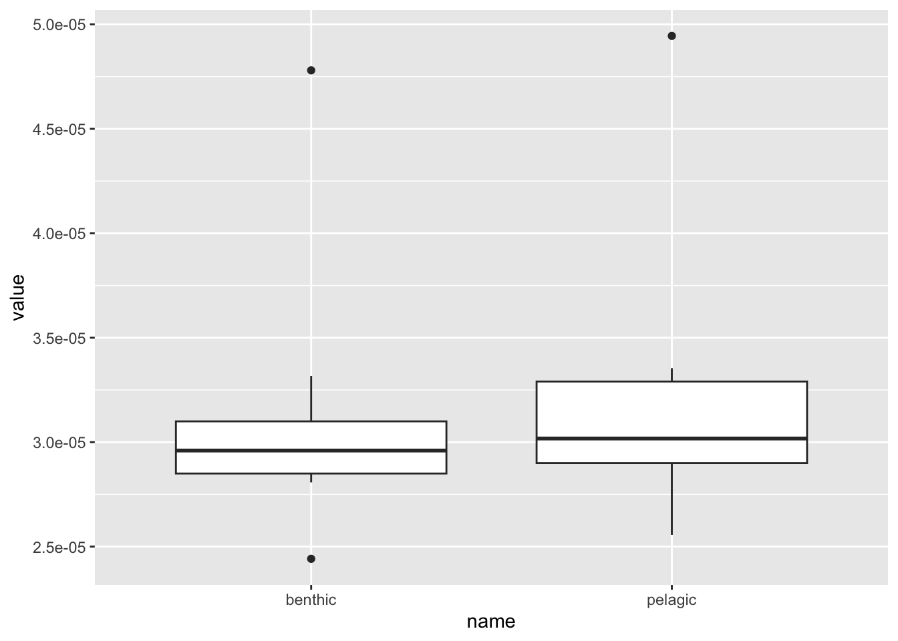
Indeed it appears that when we estimate evolutionary rates for 10 random trees, accounting for uncertainty in species relationships, pelagic species about as fast as benthic ones.
Now, this is all well and good. But, most comparative biologists would argue 10 random trees does not a posterior make. We should probably sample many more or, perhaps use the entire set of trees.
What’s to stop us? Well, if we shoot for the stars and use all 500 trees in 500 separate analyses, we’d be looking at running a for loop 50 times longer than 10 trees took (roughly 350 s or 6 minutes, see figure below). In the world of comparative methods, this isn’t such a long time, but remember, this is a preliminary analysis of only 90 or so of the 265 we hope to include. The figure below indicates that including all 220 species and using all 500 trees would take ~2500 s or about 40 minutes!!!
## Warning in geom_text(aes(50, 500, label = "computed"), inherit.aes = F): All aesthetics have length 1, but the data has 48 rows.
## ℹ Please consider using `annotate()` or provide this layer with data containing
## a single row.## Warning in geom_text(aes(175, 2200, label = "predicted"), inherit.aes = F): All aesthetics have length 1, but the data has 48 rows.
## ℹ Please consider using `annotate()` or provide this layer with data containing
## a single row.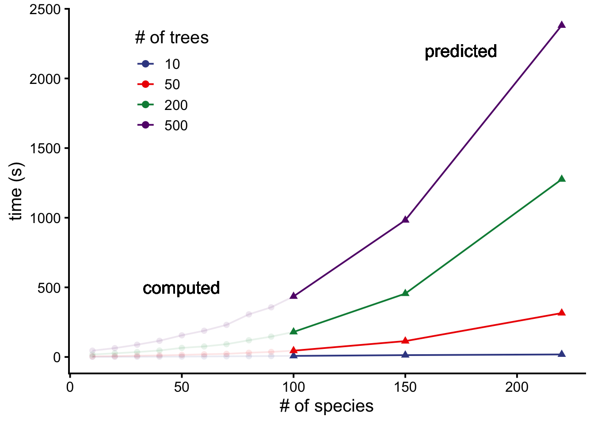
geomorph’s compare.evol.rates().
We should, therefore, be prepared for the long haul. But, hold on. I don’t know about you, but on most days, I don’t have 40 minutes to spare, even for very interesting comparative analyses. Fortunately, to avoid 100s of iterations of the same operations on different data, we can make use of a very common work-around in scientific computing: parallelization, the simultaneous execution of different pieces of a larger computation across multiple computing processors or cores. If fact, this sort of problem is considered embarrassingly parallel, that is, it is so very easy to split this task into many parallel subtasks. Specifically, we have 500 identical tasks, we need only to break these up into subtasks that run in parallel. That’s what we’ll do.
R has several packages for parallel computing. Perhaps
the most used is parallel, so cleverly named. Let’s work on
an example of how a task could be parallelized using
parallel’s mclappy() function.
mclapply is simply an extension of lapply()
that takes the tasks performed on each item in a list and spreads the
tasks across multiple cores on a computer. This is perfect for
embarrassingly parallel problems.
For example, say we wanted to do something that’s simple, but takes
just a little bit of time, like generated 10 million random values from
a normal distribution (mean=0, sd=1) any
number of times. Let’s encode a function that does this and allows one
to specify how many times to do it.
my_fun <- function(x){for(i in x) rnorm(1e7)}For comparison, let’s first use the non-parallel
lapply() to run the function 30 times and then use
mclapply() to do the same. Notice that we’ve again used
system.time() to capture the duration of the operations.
Also notice that we used parallel’s
detectCores() to detect the number of cores on the machine
and we subtracted 2 from this value. Must modern laptops and desktops
have $>$6 cores, but we don’t want all of them to be used by the
operation. We should leave a few cores that the computer can use for
operations running in the background.
t_nomc <- system.time(lapply(1:30,my_fun))
t_mc <- system.time(mclapply(1:30,my_fun,mc.cores = detectCores()-2)) #8 cores
print(t_nomc)## user system elapsed
## 7.822 0.204 8.081print(t_mc)## user system elapsed
## 6.008 0.231 1.173As you can see, the parallelized operation was about 6 times faster
than lapply(). This framework looks like it could really
speed up our estimation body shape evolutionary rates. You are tasked
with assessing evolutionary rates based on habitat using all species in
the data set and all 500 of the phylogenetic trees from Stein et al. (2018) using a paralleled
approach.
Project Report
Please submit your report and all associated data to your team GitHub repository as an .Rmd document with HTML output that addresses the following:
- Establish an array suitable for analysis using the
geomorphfunctions outlined above. Construct this from all specimens digitized in this compressed directory and Procrustes align them (note: this will be available soon after all landmark data is collected). - Does habitat result in the occupation of a different morphospace?
Please qualitatively answer this question using a
ggplot-rendered morphospace based on the first two PCs from a principal components analysis of your alignment. - Is there a shape difference between habitats?
- Is the rate of morphological evolution significantly different
between different habitat types?
- Answer both questions emperically based on a posterior distribution of rates based on all 500 phylogenetic trees.
- Make sure the distribution Z values from the Procrustes PGLS and rate estimates and are created through the use of a parallelization of your analysis.
- Please assess the statistical significance of habitat on both
distributions using a simple two-sided t-test
(i.e.
t.test()).
- What inferences with regards to ecology and behavior can you make concerning the relationship between habitat and both shape and rates of morphological evolution?
In answering your questions, your .Rmd should include the following components:
- A YAML header that specifies HTML output, the authors, and a bibliography named “BIOL3140.bib”. Submit this bibliography as well!
- Sections including an introduction, methods, results, discussion,
author contributions, and references. Make sure that each, aside from
the references, includes one to two short paragraphs. Specifically:
- Introduction: Frame the questions, indicating why they are important, what background work has been done in this realm, and how you will answer them. Please include at least one reference to support the summary of previous work. Note: this can be done easily by refiguring the introduction to this project report.
- Methods: Explicitly state how you answered the questions, including a narrative of all the analyses both qualitative and quantitative.
- Results: Include any appropriate figures or tables and a narrative of the main results that are important to answering the questions.
- Discussion: Succinctly declare how the results relate to the question and how they compare to previous work devoted to the topic. In addition, be sure to comment on the importance of your findings to the broader topic at hand. Please include at least one reference to another relevant study. Note: circling back to the introductions, both to this project description’s and yours, will be helpful here.
- Author contributions: Briefly outline what each team member contributed to the project.
- AI-use Statement: Briefly state how AI was used in the completion of the report requirements.
Each team should push one report Rmd as “Module5_TeamX.Rmd” where “X” is the each number. Please also submit all associated files and data (e.g., .bibtex files, .csv files, etc.). This means one team member should push the team’s submissions to their team’s github directory, i.e., “Module5_Team1”, if in Team 1. Project reports should be pushed by 11:59 PM on Sunday, October 25th.